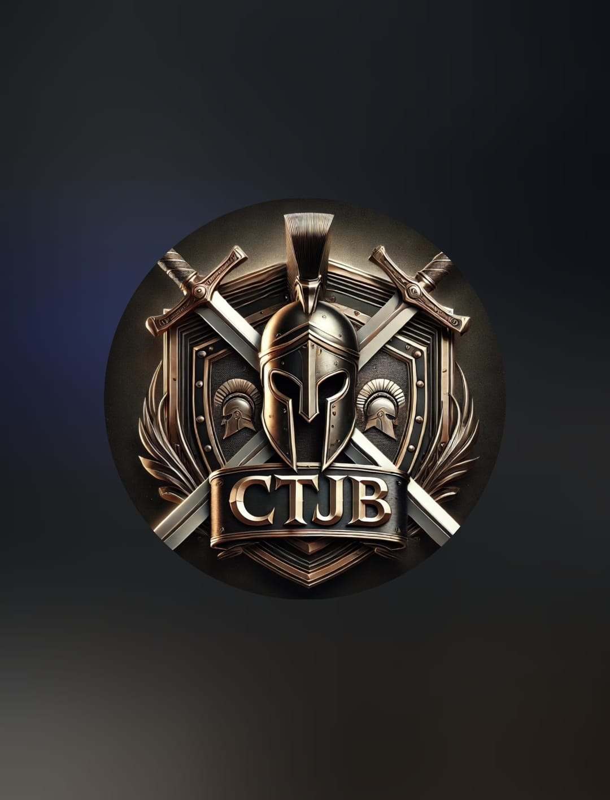
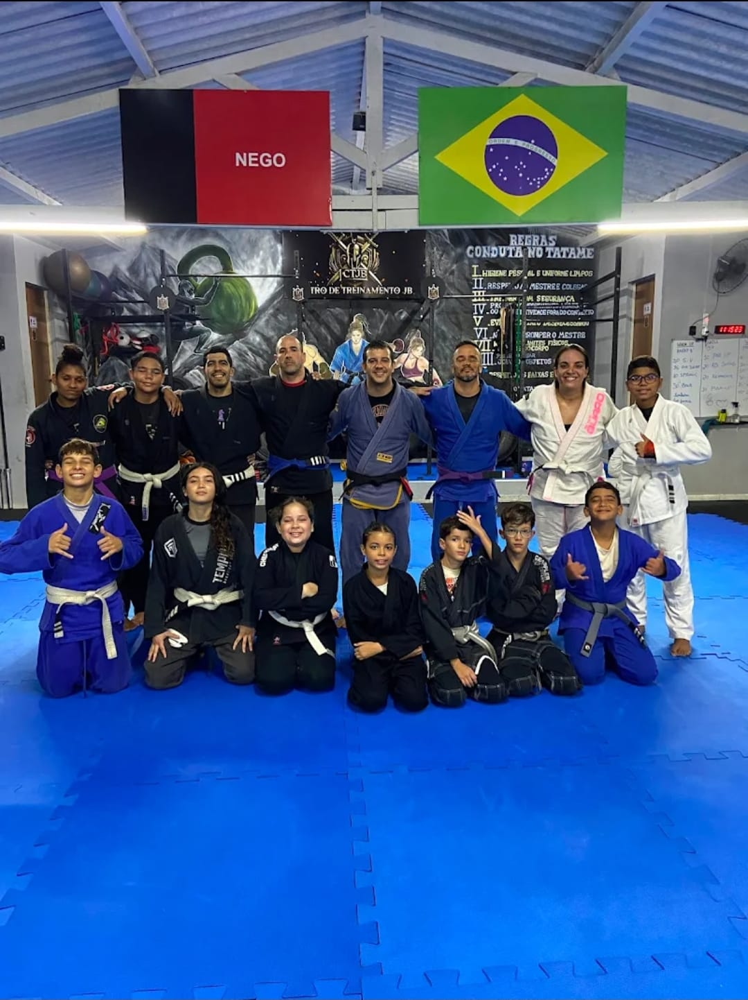

Disciplina
Presença, atenção e compromisso que se fortalecem a cada treino.

CENTRO DE TREINAMENTO JB
Preparando o próximo round
Centro de Treinamento JB
No tatame, cada treino ensina mais do que um movimento. É onde disciplina, confiança e comunidade crescem juntas.

O que nos move
O CTJB é feito de gente que aprende, ensina e se apoia. Aqui, cada pessoa tem espaço para começar do seu jeito e avançar no próprio ritmo.
Conheça nossa comunidadePresença, atenção e compromisso que se fortalecem a cada treino.
O importante não é chegar pronto, é seguir aprendendo em cada etapa.
Cada colega de treino faz parte da jornada de todo mundo no tatame.
Seu próximo passo
Treinar é uma jornada pessoal — e ninguém precisa fazer esse caminho sozinho. O primeiro passo é chegar.
Estratégia, movimento e atenção. Uma prática para desenvolver habilidades dentro e fora do tatame.
Descubra por onde começarUm ambiente para experimentar, persistir e reconhecer cada conquista do processo.
Conheça nossa essênciaUm espaço de troca e respeito onde cada pessoa tem algo a ensinar e muito a aprender.
Veja nossa comunidadeO jeito CTJB
Cada jornada começa com uma pergunta: “e se eu tentar?”. Da primeira saudação ao movimento que finalmente encaixa, o aprendizado acontece lado a lado.
Veja a vida no CTJBO primeiro passo já é parte da evolução.
Escutar, experimentar e repetir.
Treinar com respeito e parceria.
Levar o que se aprende para a vida.
Feito de encontros
Nos treinos e nos encontros, a comunidade se constrói na prática: com presença, incentivo e espaço para cada pessoa fazer parte.
Um passo de cada vez
Conheça o CTJB, sinta o clima do tatame e encontre seu jeito de começar.
Ver como começar